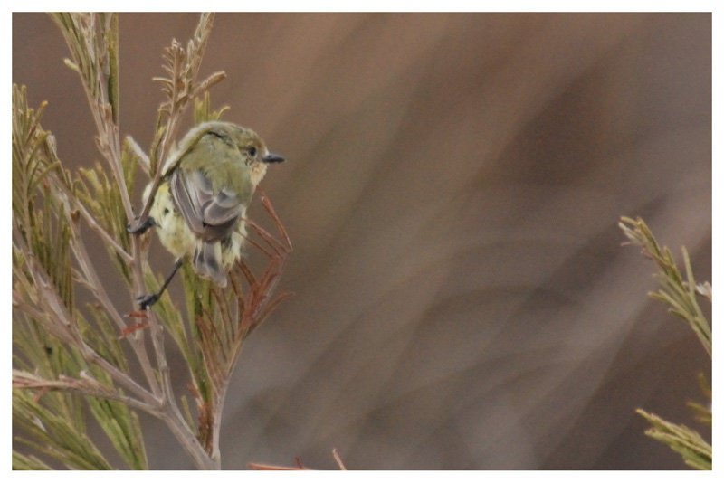

L'Acanthize nain
L'Acanthize nain (Acanthiza nana) est une espèce de passereau que l'on rencontre en Australie. C'est une espèce protégée sous la convention National Parks and Wildlife Act, 1974. C'est un petit oiseau à l'allure élégante. Il est discret, mais sait s'imposer. Il aime la proximité des autres oiseaux, il est rarement mis à l'écart de son groupe.
haut